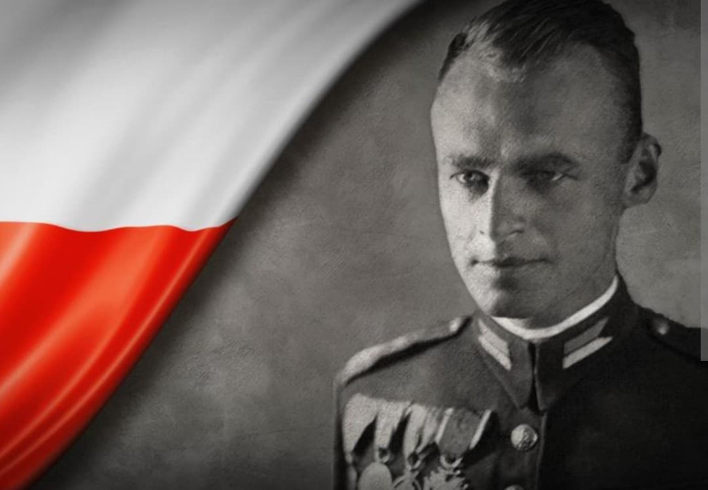
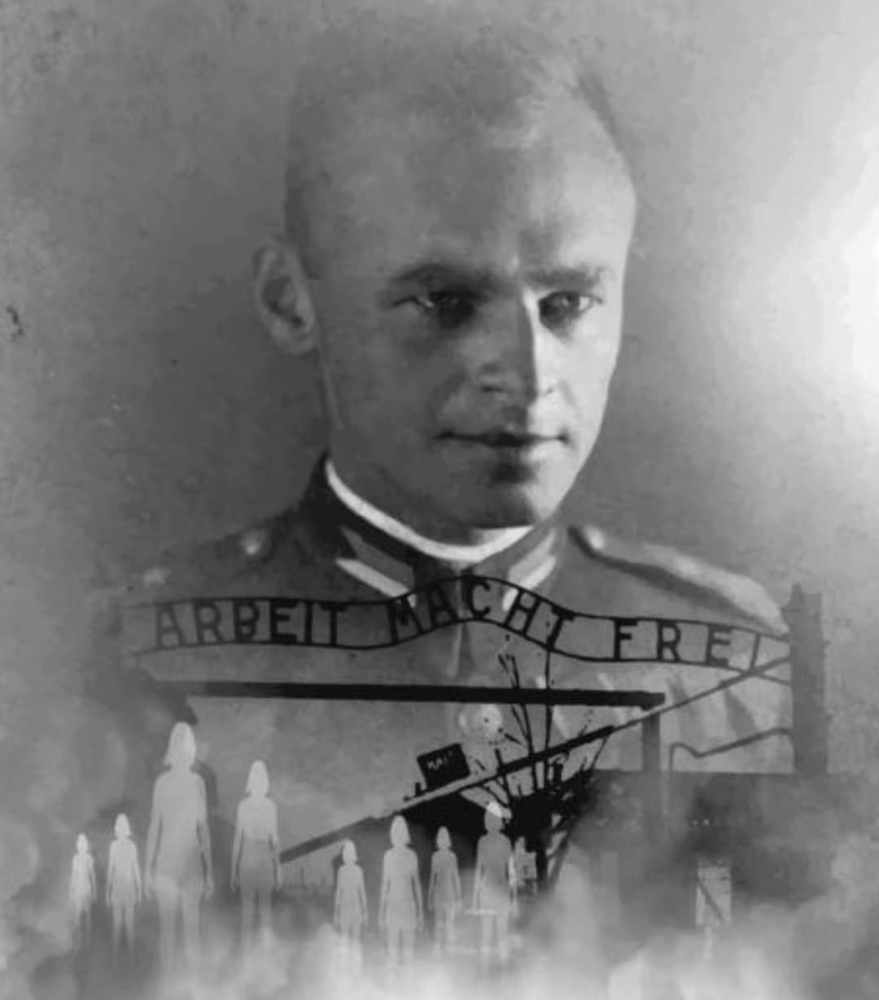
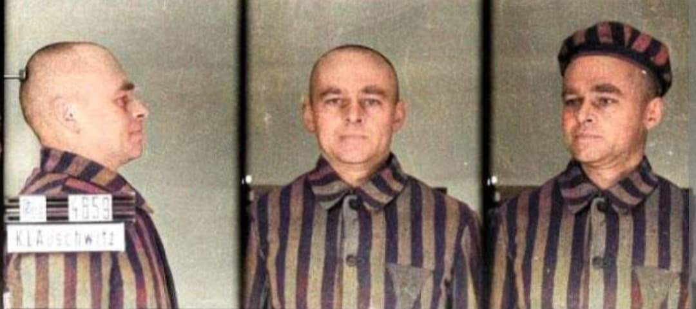
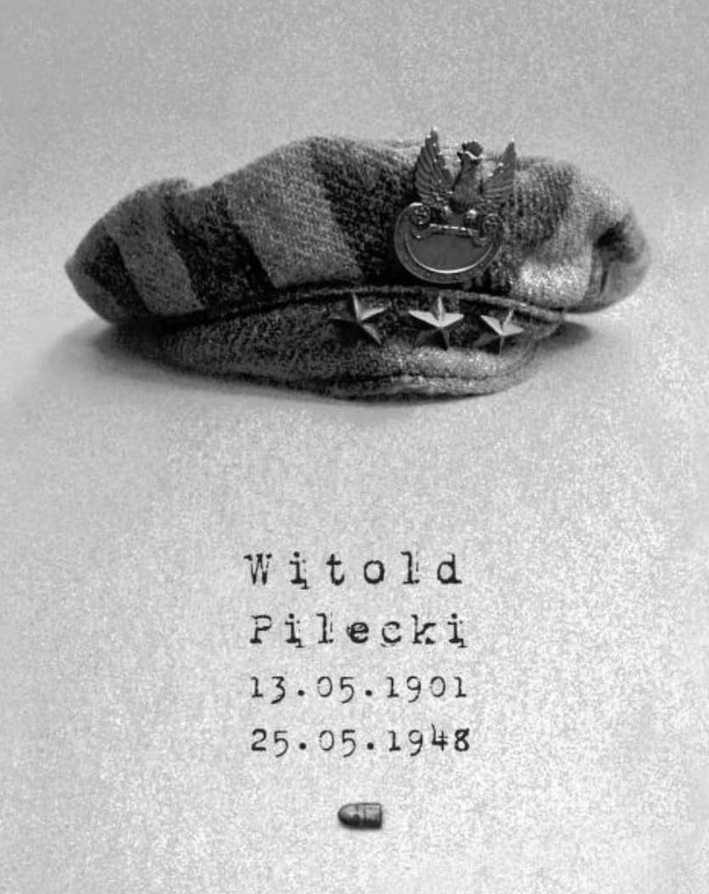
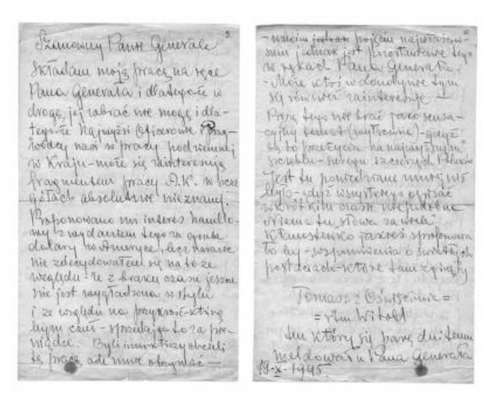
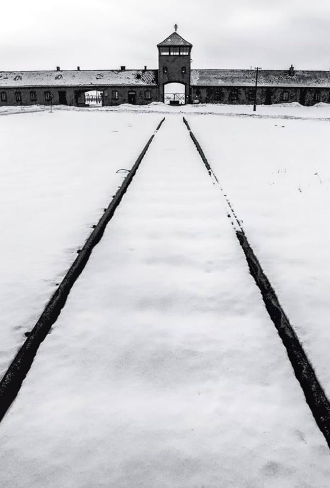

Entre 1940 et 1943, Witold Pilecki accomplit l’un des actes les plus incroyables de la Seconde Guerre mondiale : il se fait arrêter volontairement pour être déporté à Auschwitz, dans le but d’y infiltrer le camp, d’y organiser un réseau clandestin et d’en transmettre les premières preuves irréfutables des crimes nazis.
Son matricule : 4859. Sa mission : témoigner, résister, survivre.
En septembre 1940, Pilecki se porte volontaire pour une mission jugée suicidaire. Il provoque une rafle dans les rues de Varsovie afin d’être arrêté par les SS.
Son objectif : entrer dans Auschwitz, comprendre son fonctionnement, créer un réseau interne et transmettre des informations à la résistance polonaise et aux Alliés.

À son arrivée, Pilecki découvre la brutalité du système concentrationnaire : coups, humiliations, travail forcé, exécutions. Il reçoit le numéro 4859, tatoué sur son bras.
Il comprend rapidement que le camp n’est pas seulement un lieu de détention, mais un centre d’extermination progressive.

Malgré la terreur, Pilecki parvient à créer un réseau interne appelé ZOW (Union d’Organisation Militaire). Ce réseau regroupe des prisonniers de confiance chargés de :
– observer les crimes nazis
– noter les conditions de vie
– identifier les gardes violents
– aider les plus faibles
– préparer une éventuelle révolte interne
Le réseau devient l’un des premiers mouvements de résistance interne dans un camp nazi.

Grâce à des messagers qui s’évadent ou sont libérés, Pilecki transmet des rapports détaillés à la résistance polonaise, puis à Londres.
Ces documents décrivent :
– les exécutions
– les tortures
– les crématoires
– les sélections
– les conditions de survie
– les premières preuves de l’extermination des Juifs d’Europe
Ces rapports sont aujourd’hui considérés comme les premiers témoignages fiables sur Auschwitz.

En avril 1943, Pilecki décide de s’évader pour transmettre lui-même les informations et convaincre les Alliés d’intervenir. Il neutralise un garde, s’enfuit par la buanderie et parvient à quitter le camp.
Son évasion est l’une des plus audacieuses de toute la guerre.

Une fois libre, Pilecki rejoint la résistance, participe à l’insurrection de Varsovie et continue le combat contre l’occupant nazi.
Il tente de convaincre les Alliés d’attaquer Auschwitz, mais ses appels ne seront pas suivis.
La mission de Pilecki est unique dans l’histoire mondiale. Aucun autre homme n’a volontairement infiltré un camp nazi pour en révéler la vérité.
Son courage, son sacrifice et ses rapports ont permis de documenter l’horreur des camps avant même la fin de la guerre.